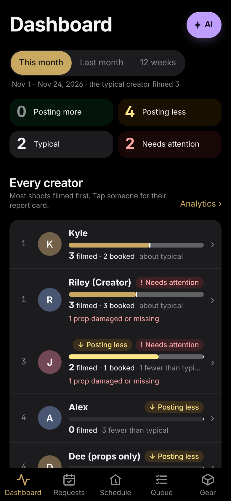
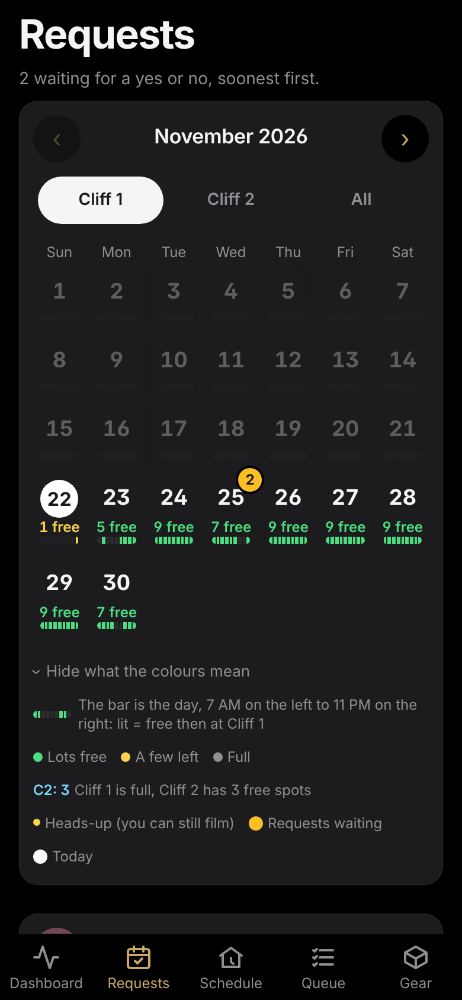
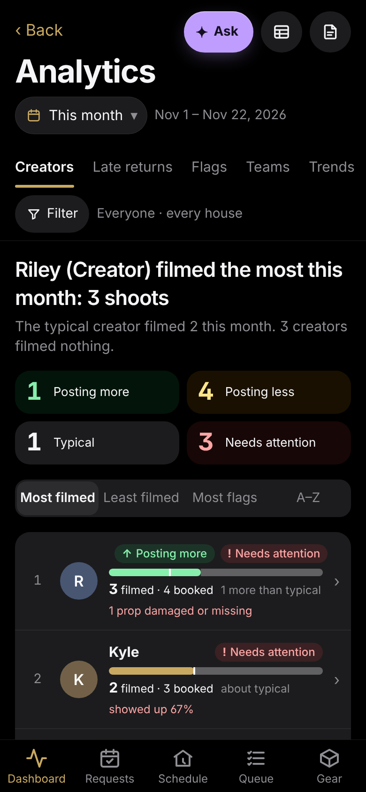
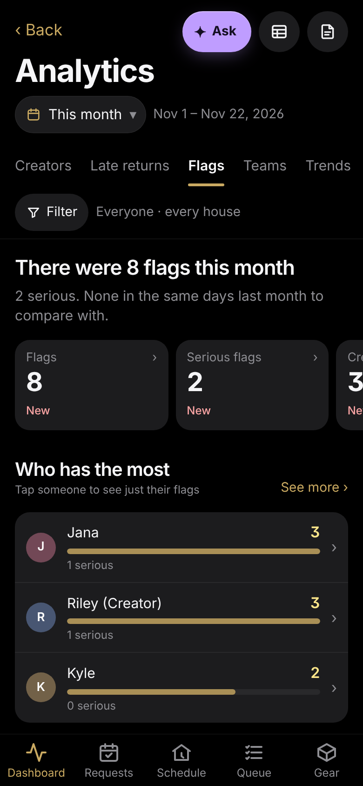
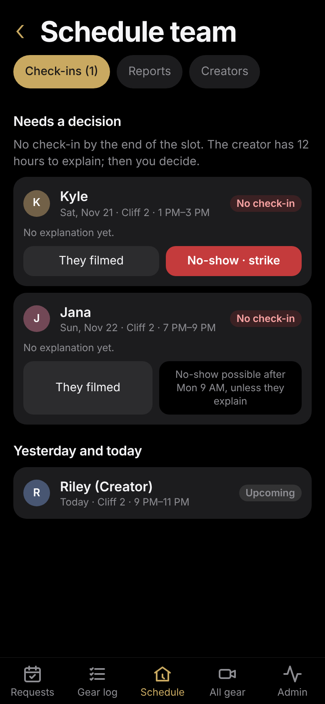
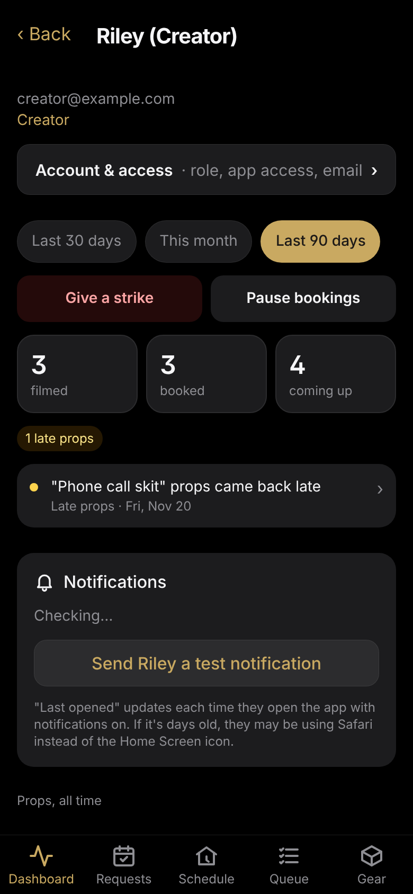
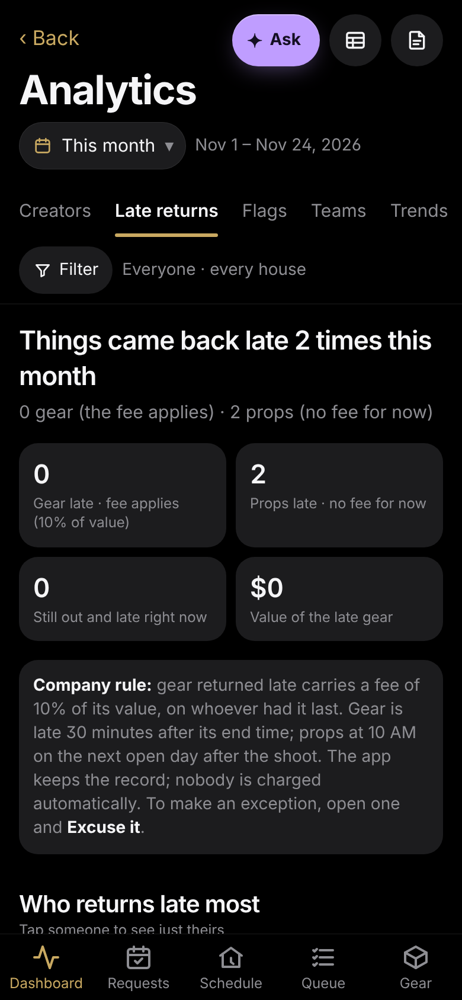
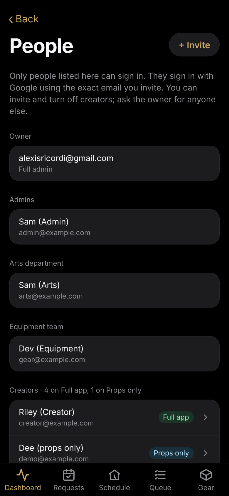
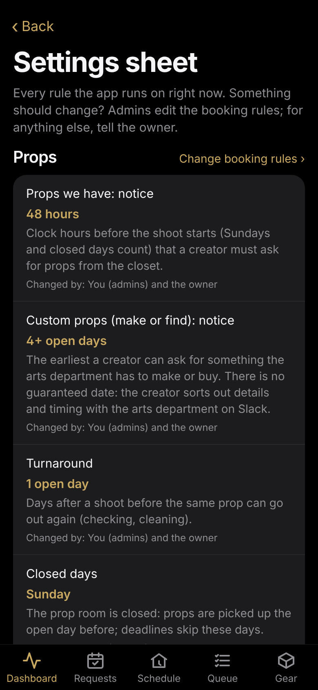

You are the person who keeps an eye on the creators: who is filming, who needs a nudge, which bookings to approve. Find what you want to do and follow the steps. Every section works on its own.
Updated Nov 23, 2026proptracker.arbcreative.coPhone and laptop
Find your way around
What an admin can do, where everything lives on the phone and on a laptop, and where to get help.
I want to know…
What I can and can't do as an admin
Admins are managers. You see almost everything and you look after the creators. Work that could break the app, or that belongs to another team, stays with them.
You can: approve or deny booking requests, make a priority booking, read every number in Analytics, act on flags, give and remove strikes, pause and un-pause creators, excuse late returns, decide missed check-ins and house reports, invite creators, turn a creator's access off, test a creator's notifications, and change the Booking rules.
You can look at, but not change: the props queue, the gear log, the schedule, prop insights and the activity log.
Only the owner: switching a creator between Props only and Full app, changing someone's role or email, inviting anyone who isn't a creator, Schedule settings (priority days, strike numbers, who books without approval), Google Calendar, AI budget and running costs.
Other teams: picking, packing and checking in props (arts department); handing out and checking in gear, blocking time, moving or cancelling someone's shoot (equipment team).
You don't film: admins don't book shoots, props or gear of their own.
I want to…
Know what each tab at the bottom does
On a phone you have five tabs. Your home is the Dashboard.
Dashboard: the creator scoreboard, what needs you now, and every admin tool underneath.
Requests: booking requests waiting for a yes or no.
Schedule: the month calendar of both houses (to look at).
Queue: the props queue run by the arts department (to look at).
Gear: the gear log run by the equipment team (to look at).
Tip: Browsing the props closet is in the Dashboard menu: Every day → Props.
I want to…
Find a tool that isn't on a tab
Everything else sits in the menu under the scoreboard on your Dashboard, sorted in four groups.
Tap Dashboard and scroll past the creators.
Every day: Requests calendar, Schedule team, Props, Prop insights.
Creators: Analytics, Creators, Invite creators.
Rules: Settings sheet, Booking rules.
Help & records: Activity, Team guide, Admin tour, Help, Report a problem, My account.
I want to…
Use the app on my laptop
On a wide screen (1100 pixels wide or more, about laptop size) the tab bar becomes a sidebar on the left, and Requests and Analytics use the whole width.
Open proptracker.arbcreative.co in your laptop's browser and sign in with the same Google account.
The sidebar has Dashboard, Analytics, Requests (with a badge for waiting requests), Creators, People & access, then Props queue, Prop insights, Gear log, Schedule and More.
Prefer the phone look? Tap Use the phone layout at the bottom of the sidebar.
To bring the sidebar back: Dashboard → My account → Laptop layout → Turn it on. (The same card has Use phone layout.)
Tip: Everything you can do on the phone, you can do on the laptop. Only the layout changes.
I want to…
Practise, or read the one-page guide again
The first time you open the app it walks you through a short hands-on tour (about 5 minutes). You can replay it with pretend creators, so nothing real changes.
Tap Dashboard and scroll to Help & records.
Tap Admin tour to practise, or Team guide for your job on one page.
I want to…
Ask the app how to do something
The violet ✦ AI button at the top of your Dashboard answers "how do I…" questions about the screens you have, with buttons that open the right page. It can't change anything.
Tap ✦ AI on the Dashboard.
Type your question, or tap a suggestion such as How do I give a strike?
Tap the Open … button in the answer to jump there.
Get a notification when a booking request comes in
Admins and the equipment team are pinged for every new booking request, every request to move a shoot, and again when a request has waited more than 12 hours.
On an iPhone, first add the app to your Home Screen (Safari share button → Add to Home Screen) and open it from that icon.
Tap Dashboard → My account.
In Notifications, tap Turn on and allow them.
Tap Send me a test. If nothing pops up, use Test with the app closed (10 s) and follow the checklist under it.
Tip: Turn notifications on on your laptop too, so you see requests wherever you are.
I want to…
Tell the owner something is broken
The app takes a screenshot of the screen with the problem and sends it to the owner with the details they need.
Tap Dashboard → Report a problem.
Go to the screen with the problem, then tap Report this screen.
Pick what happened, write a few words, and tap Send report.
Tip: Shortcut: hold two fingers on the screen for about a second to report that screen straight away.
I want to…
Change my photo, or sign out
Your photo shows next to your name around the app.
Tap Dashboard → My account.
In your profile card, tap Change photo (or Use Google photo to go back). You can also add a channel name and your birthday, then tap Save.
To sign out, scroll down and tap Sign out.
See what needs you today
Your Dashboard answers "how are my creators doing?" and "what is waiting on me?" in one screen.
I want to know…
How my creators are doing this month
Creators are compared with each other, not with a fixed target. "Typical" is what the middle creator filmed in that period.
Tap Dashboard. It opens on This month; switch to Last month or 12 weeks at the top.
Read the four tiles: Posting more (clearly above typical), Posting less (clearly below, or nothing filmed), Typical and Needs attention.
Under Every creator (most shoots filmed first), each row shows their rank, shoots filmed, shoots still booked ahead in the period, and how far they are from typical. The white tick on the bar is typical. See all opens the full list in Analytics.
Tap a creator to open their report card (it opens in Analytics).
Tip: "Needs attention" is about behaviour, not output: the creator is paused, has a serious flag (a no-show, a late cancel, a strike, damaged or missing props or gear), or showed up to less than 70% of what they booked (counted once they have 2 or more past shoots in the period).

The Dashboard scoreboard
I want to…
See only the creators posting less (or needing attention)
The four tiles are also filters.
On the Dashboard, tap a tile, for example Posting less. The list shows only those creators.
Tap the same tile again to see everyone.
Tap Open analytics to keep the same filter in Analytics.
I want to…
Clear what's waiting on the team
Needs you now (under the creators on the Dashboard, on the right on a laptop) counts everything waiting on someone. Each line opens the right screen.
Missed check-ins to decide → the list of missed check-ins on the Flags tab, where you decide them.
House reports to review → Schedule team, where you dismiss or uphold.
Late returns still out → the late flags, so you can chase them.
Flags nobody has looked at (last 28 days) → act on them.
Props requests to pack today or overdue, props returns to check in, gear returns to check in → the props queue or the gear log (the other teams' job; useful when a creator asks).
Creators paused right now → the Creators list.
Approve booking requests
Every creator booking is a request. The time is held for them until you or the equipment team say yes or no.
I want to…
Approve a booking request
Approved means it's on the official schedule and the creator gets a notification.
Tap Requests. The month calendar shows an amber number on days with requests waiting; the cards below are soonest first.
On a card, check who it is, the day, house and hours, and the coloured pills (see what the card tells you).
Tap Approve. A confirmation shows at the top of the screen.
Watch out: A request nobody decides by its start time is dropped and the creator is told. You get a reminder once a request has waited 12 hours.

Requests: the month, then the cards
I want to…
Say no to a booking request
The creator reads your reason and the time frees up for others.
On the request card, tap Deny.
Tap a ready reason (The house is busy then, Too many bookings this week, Please pick another time) or type your own.
Tap Deny again to send (it stays greyed until the reason has at least 3 characters). Tap Back if you change your mind.
I want to…
Understand what a request card tells me
Each card gives you what you need to spot overbooking or a no-show risk before you decide.
Pills: "3 of 4 filmed (30 days)", "2 coming up", "Paused", strikes, "1 no-show (30 days)", "2 already that week", "10th this month", "3 days in a row", "1 other request waiting", and a green "Shows up every time".
"Back to back with X · usual partner": they're filming next to someone they often film with.
"First in line · had a schedule change": they lost a slot to a priority booking, so this request goes first.
Usually films with: people they film back to back with most.
The grey line under it: who is before and after them at that house, who has the other house at the same time, and any blocked time or heads-up that day.
Guideline: Cliff 1 on priority days (Thursdays and Saturdays unless the owner changed them) needs a filming guideline (PDF) from anyone outside the priority group. Tap Guideline: … › to read it.
"wants to move": an approved shoot asking for a new time. The "Now:" line shows the time they keep until you approve.
Tip: Tap the creator's picture or name to open their full record. Tap the date line to see the whole day.
I want to…
See everything booked on one day
Useful before approving: is the house already busy, who is around?
On Requests, tap a day on the month calendar (or the date on a request card).
A sheet shows both houses slot by slot: names (dashed amber = a request), Free, blocked time, and offsite shoots underneath.
Tap a name to open that booking's details (to look at; you can't move or cancel it).
Tip: The switch above the calendar picks Cliff 1, Cliff 2 or All. A blue "C2: 3" means Cliff 1 is full but Cliff 2 still has 3 free spots.
I want to…
Approve requests quickly on a laptop
On a laptop, Requests becomes a week board of both houses with the waiting list on the right, oldest first.
In the sidebar, tap Requests.
On the board, dashed amber is a request, blue wants to move, gold books without approval, hatched is blocked, and a red dot means strikes or a no-show in the last 30 days.
Click a request (on the board or in the list) to see its details on the right, then Approve or Deny. Open record › there opens the creator's record.
To approve several: tick them in the list, then Approve N ticked.
Keys: A approve, D deny, J / K next / previous, W / M week / month, arrow keys change week (or month), T today, Esc closes the deny box. The strip at the top counts requests waiting, waiting over 12 h, shoots today, booked this week, house use and regular filming pairs.
I want to…
Give a slot to Kyle when someone else has it
Some people (like Kyle / Stromedy) have priority and book without approval. When they need a time another creator has, you can make a priority booking.
On the request card for that slot, tap Priority booking… (on a laptop it's in the details on the right).
Under Book it for, pick who it's for.
Choose what happens to the creator who had it: Move them to … another free time that day, or Cancel their shoot.
Tap Book it for ….
The creator gets a neutral "Schedule change" notice. A move keeps their props; a cancel lets go of anything not picked up yet. No strike either way, and after a cancel their next request goes first in line.
Watch out: The button only shows when the owner has added someone to "Books without approval" in Schedule settings, and not on offsite requests or move requests.
I want to…
Sort out a double booking from Google Calendar
A red box Double-booked in Google Calendar at the top of Requests lists two events from the old calendars that really overlap at the same house.
Tap See it in Google Calendar to check that day.
To give the time to the person from the Google Calendar event, tap Give it to … (named after them).
Choose to move or cancel the shoot that had it, then tap Book it for …, as for a priority booking.
Tip: Shoots that are only back to back (one ends 3:15, the next starts 3:30) are not clashes. If the person who already has the time should keep it, leave it and tell the owner or the equipment team: they sort the Google Calendar events.
Dig into the numbers
Analytics goes deeper than the Dashboard. Every number and every row can be tapped; your phone's Back button zooms back out one step.
I want to know…
Who is posting more and who is posting less
The Creators tab ranks everyone for the period you pick and says who filmed the most and what typical is.
On the Dashboard, tap Analytics › (or Analytics in the menu or sidebar).
It opens on Creators for This month. The other tabs are Late returns, Flags, Teams and Trends.
Sort with Most filmed, Least filmed, Most flags or A–Z.
Tap a tile to filter, tap a creator for their report card.
Tip: Only approved shoots count. Waiting, denied or dropped requests don't. Offsite shoots and creators on Props only count as filmed unless someone marks a no-show.

Analytics, Creators tab
I want to…
Look at a different period
Tap the date pill under the title (it says This month).
Pick Last 7 days, Last 28 days, Last 12 weeks, Last 6 months, Last 12 months, This month or Last month. You can also choose how the chart is split.
On a chart (the Trends tab, or Month by month on a report card), tap a column, then Zoom in › to look at just that week or month. Tap Zoom out to … to go back.
Tip: Numbers are compared with the same number of days just before ("Up 11%", "About the same").
I want to…
Narrow Analytics to one house, one creator or one kind of flag
Tap Filter under the tabs.
Pick a house, a flag type or a creator, then tap Done.
Your choices show as chips; tap a chip's × to remove it, or Clear all.
I want to…
Read one creator's report card
Everything about one person for the period: their rank, how they compare, and why anything was flagged.
Tap the creator on the Dashboard or in Analytics. (On a laptop it opens on the right, next to the list.)
At the top: their rank ("#1 of 7"), shoots filmed, and their pills (posting more / less, needs attention with the reason).
Scroll: their numbers, Month by month against typical, Films with, their late returns, Their flags, What they filmed, Every shoot (a not-filmed one says why), Coming up and Booking requests.
Tap Record › for their full record with strikes, notifications and Account & access.
Tip:Give a strike and Pause bookings are right under the report card too.
I want to know…
Who films with whom
The app notices creators who film back to back at the same house, or who were booked together.
Open a creator's report card and scroll to Films with: who, how many days, and when they last filmed together. Tap a name to open that person.
On a laptop, the right side of Analytics shows Who films together, the studio's most regular pairs (when no report card is open). The laptop Requests page counts the regular filming pairs at the top.
Request cards also show Usually films with.
I want to…
See all creators in one list
Tap Dashboard → Creators (or Creators in the sidebar).
Pick Last 30 days, This month or Last 90 days.
Each creator shows filmed of booked, how often they showed up, and their flags. Sort by most filming or most flags. On a laptop this is one wide table.
Tap a creator for their record.
Tip: Excused flags don't count here.
I want to…
Ask the AI a question about the numbers
The AI answers from the same numbers as Analytics (the last 6 months) and points you to the page with the details. It only reads; it can't change anything.
Tap the violet ✦ Ask at the top of Analytics, or Ask AI about your creators on the Dashboard.
Type a question or tap a starter.
Tap See the details › to open the right page.
For example: Who has the most no-shows lately? or How fast is the arts team packing?
I want to…
Break the numbers down or download a spreadsheet
In Analytics, tap the table icon at the top (Advanced view).
Under Break down by, pick Creator, House, the week or month (Week / Month), Flag type, Flag or Staff member.
Tap a column title to sort. Tap a row to drill in.
Tap Download as a spreadsheet to get the table as a file. What these columns mean explains each one.
I want to know…
How the arts and equipment teams are keeping up, and the overall trend
In Analytics, tap Teams: requests packed, how many were packed on time, typical time to pack and to check returns in, per person, and what's waiting Right now. Tap a person to see every job they did, slowest first.
Tap Trends for shoots and flags over time, top creators, flags by type and which house is used most.
Act on flags
A flag is anything worth a second look: a no-show, a late cancel, starting late, running over, leaving a mess, skipping the check-in or wrap, late returns, damage. Each one can be acted on.
I want to…
See every flag, and who has the most
In Analytics, tap Flags.
The cards at the top are Flags, Serious flags, Creators flagged and Still open. Tap one to jump to that list.
Who has the most: tap someone to see just their flags. By type groups them (abandoning shoots, not finishing on time, leaving the house a mess, skipping check-in photos and wraps, late or broken returns, not confirming in time, strikes).
Every flag opens on To do (nobody has acted yet). Switch to Handled, Excused or All, and tap Serious only to narrow it.

Analytics, Flags tab
I want to…
See the evidence behind a flag
Before acting, look at what really happened.
Tap the flag in any list.
The sheet shows what it means and the evidence: shoot place and hours, check-in time and set photo, wrap, what the creator explained, who reported it and their photos, return time and photos, who picked up or used the gear, due and back times, value.
What was done lists every action so far, with who did it.
Tap Open the shoot › (or the props request / gear booking) to see the original.
I want to…
Send a creator a warning note
A friendly nudge without a strike. It goes to their phone as a notification and is kept on the flag.
Open the flag.
Tap Send … a note (with their first name). A suggested message is filled in; change it as you like.
Tap Send the note.
Watch out: Notes arrive only as a notification. If it says "Note saved (no phone signed up)", the creator hasn't turned notifications on: tell them in person.
I want to…
Excuse a flag so it doesn't count
For good reasons (a family emergency, the team's mistake). An excused flag stops counting everywhere, and a strike that came with it comes off.
A missed check-in or a house report still waiting for a decision has to be decided first (They filmed / No-show, Dismiss / Uphold).
Open the flag.
Tap Excuse it (doesn't count), write why (for the record) and tap Excuse it.
Changed your mind? Filter the list on Excused, open it and tap Count it again.
I want to…
Mark a flag as dealt with
When you've talked to the creator and nothing else is needed. The flag still counts; it just leaves your To do list.
Open the flag.
Tap Mark as handled, add a note if you like (only admins see it), and tap Mark as handled again.
I want to…
Decide on a missed check-in (did they film or not?)
Creators check in with a photo when their shoot starts. No check-in by the end of the slot = flagged. The creator then has 12 hours to explain before you can mark a no-show.
Tap Dashboard → Schedule team.
On Check-ins, read their explanation, if any.
Tap They filmed (the flag goes away) or No-show · strike and confirm (a strike on their record).
Tip: While they can still explain, the button reads "No-show possible after …". You can do the same from the flag itself (Needs you now → Missed check-ins to decide opens them on the Flags tab). Offsite shoots and creators on Props only aren't asked to check in.

Schedule team (your tab bar looks different)
I want to…
Deal with a report that someone left a mess or ran over
When creators check in, they can report the slot before them (house left a mess, ran over into their time), with photos and a note.
Tap Dashboard → Schedule team → Reports.
Read the note and look at the photos.
Tap Dismiss, or Strike for … to give the person reported a strike.
Tip: Reports also show as flags (Ran over / Left a mess). There the buttons read Dismiss the report and Uphold · strike for …. A dismissed report stops being a flag.
Strikes and pauses
Strikes add up. Too many in a short time pauses a creator's prop requests automatically (by default 2 strikes in 30 days pause them for 14 days; the live numbers are on the Settings sheet). House booking and taking gear keep working.
I want to…
Give a creator a strike
It goes on their record with your reason, they get a notification, and it counts toward the automatic pause.
Open the creator's record (tap them on the Dashboard, then Record ›; or Creators → the person).
Tap Give a strike.
Pick what it's about: Props, Gear, Schedule, Behaviour or Other.
Write why (they will read it), then tap Give the strike. The app tells you if this paused them.
Tip: If the strike is about a flag, give it from the flag (Give a strike for this) so the two stay linked.

A creator's record
I want to…
Take a strike back
It stays on the record as removed, with your reason. If they drop below the limit, an automatic pause lifts too.
Open the creator's record and find the strike (or open the flag it came with).
Tap Remove (on a flag: Remove the strike that came with it).
Write why, then tap Remove the strike.
Watch out: Removing a strike never lifts a pause you set by hand. Lift that separately.
I want to…
Pause a creator's prop requests
A pause stops new prop requests. They can still book house time and take gear.
Open the creator's record.
Tap Pause bookings.
Pick 3 days, 7 days, 14 days or 30 days, write why, and tap Pause for … days.
I want to…
Lift a pause early
They can request props again straight away, and their strike count starts again from zero.
Open the creator's record and tap Lift the pause, then Lift the pause again to confirm.
Company rule: gear brought back late carries a fee of 10% of its value, on whoever had it last. Gear is late 30 minutes after it's due; props from 10 AM the next open day after the shoot (props have no fee for now). The app only keeps the record; nobody is charged automatically.
I want to…
See who returned things late
In Analytics, tap Late returns.
The tiles show gear late (fee applies), props late (no fee for now), things still out and late right now, and the value of the late gear.
Who returns late most: tap someone to see just theirs.
Below, every late return: how late, due and back times, value, and Fee applies, No fee, Still out or Excused. Switch between gear, props or both, and counted, excused or all.

Analytics, Late returns
I want to…
Make an exception for a late return
Excusing it means the fee shouldn't apply and the flag stops counting.
On Late returns, tap the late return.
Check Due back, Came back, Last had it and Value.
Tap Excuse it (doesn't count), write why and confirm.
I want to…
Download the late-return log
On Late returns, pick the period and filters you want.
Scroll down and tap Download this log as a spreadsheet.
Tip: "Value not set" means the equipment team hasn't entered that gear's value yet.
Invite and manage creators
Only invited people can sign in. You look after the creators; the owner handles everyone else.
I want to…
Invite a new creator
Creators you invite start on Props only: they can search and look at the props but not book. The owner switches them to the Full app when they're ready.
Tap Dashboard → Invite creators (laptop: People & access).
Tap Invite at the top right of the People page.
In Invite someone, type their email address and, if you like, their name (Creator is the only choice for you). Tap Invite as Creator.
On Invited ✓, tap Send the invite message and send it by text, WhatsApp or email (if your phone can't share, it copies the message: paste it). The app doesn't send emails itself. Invite another starts again.
Watch out: They must sign in with a Google account that uses exactly that email. "That email is already on the list" means they're invited; tap Open their access settings ›.

People & access
I want to…
Move a creator from Props only to the Full app
This switch belongs to the owner. You can see it, but it's greyed out for you.
Tap the creator on the People page (Dashboard → Invite creators, or People & access on a laptop) to see their App access: Props only or Full app.
Ask the owner to switch them.
I want to…
Turn off a creator's access (or back on)
They're signed out right away. Their history is kept; nothing is deleted.
On the People page (Dashboard → Invite creators; laptop: People & access), tap the creator. (Or from their record: Account & access.)
Tap Turn off access, then Turn off to confirm (Cancel to keep them).
To undo, open them again and tap Turn access back on.
I want to…
Check whether a creator's phone gets notifications
When a creator says "I never get notified", you can see their phones and send them a test.
Open the creator's record.
In Notifications, see which phones are signed up and when each was last opened.
Tap Send … a test notification and read the result, which says what to do next.
Tip: If "last opened" is days old, they're probably using Safari instead of the Home Screen icon.
I want to…
Change someone's role or email
Only the owner can change roles, change an email (it merges two accounts), or invite arts, equipment or admin people. Ask the owner, and say who and what.
Rules and settings
You can change the Booking rules (props notice, closed days, turnaround). Everything else is on the Settings sheet to read.
I want to…
See every rule the app runs on
One page with every live rule, what it means and who can change it.
Tap Dashboard → Settings sheet (or the page icon at the top of Analytics).
Read the sections: props, gear, schedule, check-ins and strikes, comparing creators, and what each flag means.
"Changed by: You (admins) and the owner" means you can change it with Change booking rules ›. Anything else: tell the owner.

The Settings sheet
I want to…
Change how much notice creators must give for props
Tap Dashboard → Booking rules.
Under Notice needed, set Props we have in clock hours before the shoot starts (Sundays count; 48 unless someone changed it; up to 336), and Custom props (make or find, minimum) in open days (4 unless changed).
Tap Save (it shows Saved ✓). New notice applies to new requests.
Tip: The arts department can always book sooner. Custom props never have a guaranteed date: creators sort out the details with the arts department on Slack.
I want to…
Set the days the prop room is closed, and holidays
On closed days props are picked up the open day before, and deadlines skip those days. Creators can still film.
Open Booking rules.
Under Days the prop room is closed, tap the weekdays (red = closed every week; Sundays unless changed).
Under Holidays and other closed dates, pick a date and tap Add (Remove to take one off).
Tap Save.
I want to…
Give props time to be cleaned between shoots
Turnaround is the number of open days after a shoot before the same prop can go out again.
Open Booking rules → Turnaround.
Set the Default (in days; 0 means it can go out the next day).
To give a category its own number (for example extra days to wash costumes), type it next to that category. Leave it blank to use the default.
Tap Save.
Look things up for a creator
When a creator asks "where are my props?" or "who has the FX3?", you can look. These screens belong to other teams, so you can read them but not change them.
I want to…
Check where a creator's props request is
Tap Queue.
Tabs: Today, To prepare, Ready, Out, Returns, Done. Each card shows which shoot it's for and its status (Late, At risk, n of N picked). You can only look: picking, packing and checking in are the arts department's.
Tap a request to see its props, progress and history. Tap a photo to see it full size.
Tip:Dashboard → Requests calendar lists every props request by shoot day, with house and time.
I want to…
See who has a piece of gear
Gear is grab-and-go on the shoot day: creators tick every piece and take a photo when they take it and bring it back.
Tap Gear.
Tabs: Today, Out (late first, in red), To check in, Upcoming, Past.
Tap a booking for the pieces, who picked it up, the return photo and any problems.
I want to…
See who is filming when
Tap Schedule. The month shows free spots per day; switch Cliff 1, Cliff 2 or All.
Tap a day for both houses hour by hour. A small amber dot is a heads-up (something happening at the house, filming still possible).
Tap a booking to see who, when and its history.
Watch out: Moving, swapping or cancelling someone's shoot, and blocking time, is done by the equipment team (or the owner). Ask them.
I want to know…
Which props are popular, run out, or get damaged
Tap Dashboard → Prop insights.
It opens on 30 days; pick 7 days, 90 days or All time instead.
Read the cards: Most booked, Trending now, Often unavailable ("Buy another?"), Asked for, but we don't have it, Grab-and-go candidates, Damaged the most, Missing after return, Needs attention now, Never asked for and By category. Tap a person for their props and record.
I want to…
Look through the props closet
Tap Dashboard → Props.
Search by name or idea, or tap a category.
Tap a prop for its photos, how many we have, room and bin, and a calendar of when it's free.
I want to know…
Who changed what, and when
Tap Dashboard → Activity.
Scroll through everything that happened to props and requests, with who did it and when.
Quick answers
Why can't I book a shoot for myself?
Admins don't film, so there's no booking of shoots, props or gear on your account. If you also create videos, ask the owner about a creator account.
What does "typical" mean?
The number of shoots the middle creator filmed in the period, counting only creators who had at least one shoot in it. "Posting more" is clearly above that (about a quarter more, and at least one shoot); "Posting less" is clearly below it, or nothing filmed while others did.
Is there a minimum number of shoots per month?
No. Creators are compared with each other to see who is posting more and who is posting less.
Why is a creator marked "Needs attention" when they film a lot?
Needs attention is about behaviour: they're paused, have a serious flag (no-show, late cancel, strike, damaged or missing props or gear), or showed up to less than 70% of what they booked. The reason is shown in red on their row.
How many strikes before a creator is paused?
By default 2 strikes in 30 days pause their prop requests for 14 days. The owner sets these numbers; the live ones are on the Settings sheet.
Does a pause stop them filming?
No. A pause only stops new prop requests. They can still book house time and take gear.
What gives a creator a strike automatically?
A no-show the team confirms, cancelling a booked shoot inside the notice period (unless it was booked less than 24 hours ahead or cancelled within 10 minutes of booking), and a house report the team upholds. You can also give one by hand.
Does the app charge the 10% late fee?
No. It only records the late return, how late, the value and who had it last. Excuse a late return to make an exception.
Who is responsible for shared gear that came back late?
The last person who had it: whoever returned it, or else whoever signed for it at pickup.
What happens if nobody approves a request?
Admins and the equipment team get a reminder after 12 hours. If it's still waiting at its start time, it's dropped and the creator is told.
I don't see the Google Calendar tab on Requests.
That tab is for the owner and the equipment team, who sort events from the old calendars. You still see the red "Double-booked in Google Calendar" box.
Can I switch a creator to the Full app?
No, only the owner can. Creators you invite always start on Props only.
Can I invite someone to the arts or equipment team?
No. Admins invite creators only. Ask the owner for anyone else.
Can I change the strike numbers or priority days?
No. Those are Schedule settings, which only the owner changes. You can change the Booking rules (props notice, closed days, turnaround).
Why don't I see some creators in Analytics?
Analytics shows creators and the owner only. Staff (admins, arts, equipment) never appear as creators. Excused flags are left out of the counts.
Can I see what the AI or the app costs?
No. AI budgets and running costs are for the owner only.
The phone and laptop look different. Am I missing something?
No. Both have the same tools; only the layout changes. On a laptop, People & access and Creators are in the sidebar; on a phone they're in the Dashboard menu.